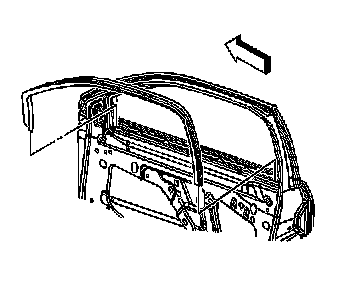

Front Side Door Window Inner Weatherstrip Replacement
Front Side Door Window Inner Weatherstrip Replacement
Removal Procedure

1. Remove the door trim panel. Refer to Front Side Door Trim Panel Replacement (Service and Repair) .
2. Remove the window inner belt sealing strip. Refer to Front Side Door Window Belt Inner Sealing Strip Replacement (Front Side Door Window Belt Inner Sealing Strip Replacement) .
3. Starting at the rear lower end, pull the inner window weatherstrip away from the door header.
Installation Procedure
1. Starting at the upper, rear corner, install the inner window weatherstrip to the door pinchweld flange.
2. Install the window inner belt sealing strip. Refer to Front Side Door Window Belt Inner Sealing Strip Replacement (Front Side Door Window Belt Inner Sealing Strip Replacement) .
3. Install the door trim panel. Refer to Front Side Door Trim Panel Replacement (Service and Repair) .